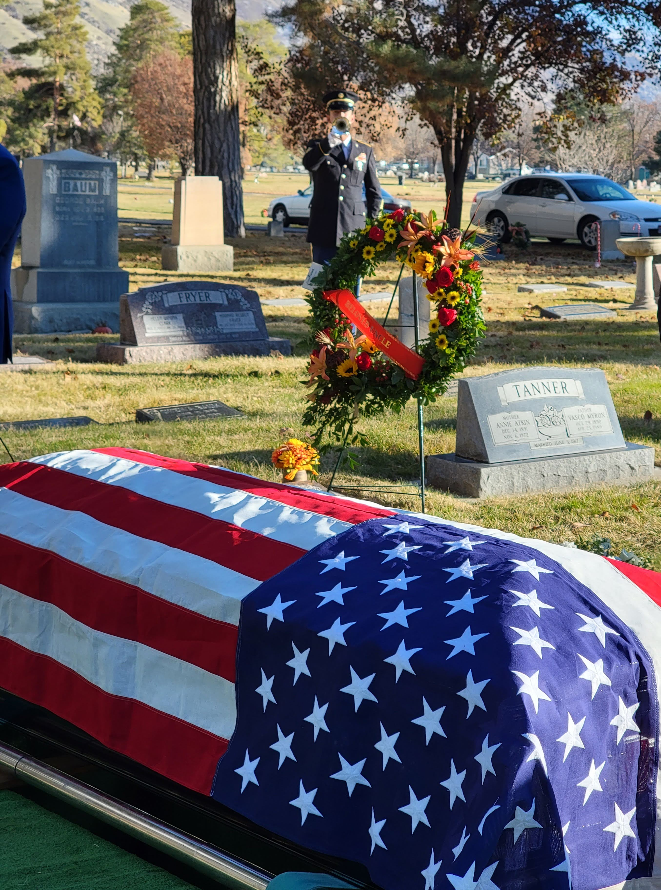

This weekend our neighborhood celebrated the lives of two individuals that spent their last and perhaps their best years of their lives with their family and friends.
They shared their wisdom, time and love.
The families held their Family Conferences and we were invited to join.
Last Sunday, our bishop was uncharacteristically extemporaneous.
Normally a calm, in-control person, seemed a bit distracted – almost unprepared.
At the start of the meeting, he announced that Brother Steve had passed away.
We could hardly believe it, for we all saw him healthy, doing his normal routine of hiking/biking the Rock Canyon – just a week ago.
Then before bearing his testimony, he announced that Sister Jackie had also passed away.
Later we learned that he was told about these at 11:58 and 12:13.
Our church services begin at Noon.
The balance of the meeting was turned into a impromptu memorial service for Jackie and Steve
Recounting their kindness and service.
Scheduling of the Neighborhood Conference
The Ward had already scheduled the annual Christmas Party at 10AM on Saturday.
Jackie’s family chose to meet on Friday at 6PM.
Steve’s family planned to meet after the Ward Christmas Party.
This was the beginning of what turned out to be a rich, memorable gathering.
The Public Side
We knew both Jackie and Steve loved to travel, to gain a better understanding of humanity.
They preferred the non-traditional approach to travel.
Spend time with locals, in their environment.
The longer the stay, the better.
Difficult to document all of the places and people they traveled to, met and influenced.
But it must have impacted Jackie and Steve as well
They both could not only read and understand individuals that came into their sphere, but also knew how to succor them and make them whole.
They loved all humankind, the creation of our common God.
Humankind responded in a like manner.
Words and Music as the complementary force
They graduated from this phase of progression, the life we are familiar and confined to.
They have shown how to learn, then teach and serve others.
Though it is entirely inadequate, the family and friends paid tribute in words and music.
And this in turn invoked memories of their lives and influence on us
Chosen music and words were elevating and eloquent.
Speakers wove the family lessons and experiences as if they were one – because they are.
Jackie’s family shared her writings. Often captured in poems.
Grandsons of Steve performed Be Still My Soul
They pulled out hats prior to singing, a tribute to their hat loving grandfather.
That hymn was also sung on the Friday evening portion of the gathering.
The music based on Sibelius’ Finlandia and words by Katharina A. von Schlegel was a fitting choice for their Nordic or Scandinavian heritage
Grateful for that heritage.
One that displays, The Cross, on their national symbol
The one that we, bear patiently, the cross of, grief or pain.
The Friday evening session ended with an abundant serving of dessert, a mingling of family and friends, as Jackie would have wanted.

Saturday Afternoon Session continued the lessons from uplifting and transformational life of Steve.
He loved people and he made sure they knew it.
By providing the needful item, whether it was a warm bread or words of encouragement.
His father passed away when Steve was 13.
Because Steve grew up without a father’s presence, he knew how to succor those that needed his assuring wisdom
The Saturday afternoon session ended with a graveside service at the Provo Cemetery.
The December afternoon gave way to a clearing, ray of sunshine.
A military honor was provided.

General Instructions & Personal Transformations
In the Church, general instructions are given, 2 times a year, on how we should live our lives.
In the family, we receive life long lessons from, mostly from parents, when we are young and growing up.
Then as adults, we influence and transform one another.
We change and grow by implementing those principles that we learn at the general church level, reinforced each Sabbath.
However, it is at the family or neighborhood level that lessons are implemented and transformed into life’s – on a daily basis
At times we get a personal glimpse of how a family influences and builds lives
This weekend we were blessed to see and mingle with two such families.
Thank you to the families of Jackie and Steve.